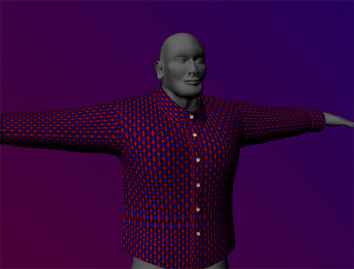
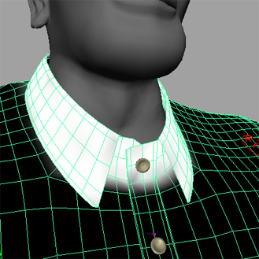

本示例将介绍如何使用 nCloth 模拟一件扣上纽扣的衬衫。
扣上衬衫的纽扣
在本示例中，目标是扣上衬衫的两片衣襟，而不让它们散开。
创建纽扣模板
- 打开大纲视图。
- 在“大纲视图”(Outliner)中选择 hairSystem1Follicles。
- 在主菜单中选择“显示 > 对象显示 > 取消模板”(Display > Object Display > Untemplate)。
纽扣更改为线框显示。如果单击纽扣，则将无法对其进行选定。在扣衬衫的纽扣并需要选定指定顶点时，此操作很有用。
将衬衫的两襟扣在一起
- 转到播放范围的开头。
- 在衬衫上单击鼠标右键，然后从显示的标记菜单中选择“顶点”(Vertex)。
Maya 即会显示 nCloth 的顶点。
- 选择衬衫上纽扣之一正下方的顶点，然后按住 Shift 键并单击衣襟下方最近的顶点，以将其包含在选择中。
注：
如果按照如上所述方式选择两个顶点有困难，可以将显示模式更改为“线框”(Wireframe)模式”（热键：4），以便顺利进行选择。
- 选择 nConstraint > 组件到组件(nConstraint > Component to Component)。
- 在“属性编辑器”(Attribute Editor)中，选择“DynamicConstraint1”选项卡。
- 在“动态约束属性”(Dynamic Constraint Attributes)部分中，将“约束方法”(Constraint Method)设定为“橡皮筋”(Rubber Band)。
- 选择“nCache > 创建新缓存 > nObject”(nCache > Create New Cache > nObject)。
Maya 会自动播放 nCloth 模拟，并将其作为缓存保存到磁盘中。
- 播放模拟。
现在衬衫已松散地穿在身体上，但衬衫的两襟已在所约束的纽扣处扣在一起。
- 转到播放范围的开头。
- 打开大纲视图。
- 在“大纲视图”(Outliner)窗口，选择 DynamicConstraint1。
- 按 Delete 键删除约束。
- 在衬衫上单击鼠标右键，然后从显示的标记菜单中选择“顶点”(Vertex)。
- 与步骤 3 和 4 中对第三个纽扣所做的操作相同，按住 Shift 键并单击每个纽扣下的每个顶点以及衣襟下方各自最近的顶点。
- 选择nConstraint > 组件到组件(nConstraint > Component to Component)。
- 在“动态约束属性”(Dynamic Constraint Attributes)部分中，将“约束方法”(Constraint Method)设定为“橡皮筋”(Rubber Band)。
- 在“大纲视图”(Outliner)窗口中，选择 hairSystem1Follicles，然后选择“显示 > 对象显示 > 取消模板”(Display > Object Display > Untemplate)。
纽扣将再次在场景视图中显示。
- 选择“nCache > 创建新缓存 > nObject”(nCache > Create New Cache > nObject)。
Maya 会自动播放 nCloth 模拟，并将其作为缓存保存到磁盘中。
- 播放模拟。
衬衫的两襟在每个纽扣处仍扣在一起。
改进衬衫的行为
虽然衬衫已扣上纽扣，但用户会注意到整体外观看起来还有些不对。布面看起来拉伸过度，两片衣襟在某些点互相穿透。现在，需要进行一些调整，来解决此问题。
改善 nCloth 衬衫的外观
- 转到播放范围的开头。
- 选择衬衫。
- 在“属性编辑器”(Attribute Editor)中，选择 nClothShape1。
- 在“碰撞”(Collisions)部分，如下所述设置属性：
- 自碰撞标志(Self Collision Flag)：顶点面(VertexFace)
- 自碰撞宽度比例(Self Collide Width Scale)：1
- 厚度(Thickness)：0.017
- 在“动力学特性”(Dynamic Properties)部分，如下所述设置属性：
- 拉伸阻力(Stretch Resistance)：100
- 压缩阻力(Compression Resistance)：40
- 弯曲阻力(Bend Resistance)：1
- 选择“nCache > 创建新缓存 > nObject”(nCache > Create New Cache > nObject)。
Maya 会自动播放 nCloth 模拟，并将其作为缓存保存到磁盘中。
- 播放模拟。
现在，衬衫的两襟正确碰撞，不再互相穿透。
绘制衬衫的特性
用户可能会注意到，尽管现在碰撞是正确的，但衬衫的某些部位仍不能像真实的布料般做出反应。最明显的是，衣领和袖口显得太宽松，而真实的衬衫则是笔挺的。通过绘制顶点特性可以修复此问题。
加固衣领和前襟
- 转到播放范围的开头。
- 选择衬衫，然后选择“nCloth > 绘制顶点特性 > 输入吸引”(nCloth > Paint Vertex Properties > Input Attract)。
光标将变为 Artisan 笔刷。
- 打开“工具编辑器”(Tool Editor)。
- 如下所述调整工具设置：
- 半径 (U)(Radius(U))：0.3
- 半径 (V)(Radius(V))：0.3
- 值(Value)：0
- 单击“整体应用”(Flood)。
为衬衫整体应用黑色，表示对输入网格没有吸引力。
- 将“值”(Value)设定为 1。
- 使用 Artisan 笔刷，绘制衬衫的衣领。

- 将“值”(Value)设定为 0.2。
- 使用 Artisan 笔刷，绘制衬衫的袖口。
- 选择“nCache > 创建新缓存 > nObject”(nCache > Create New Cache > nObject)。
Maya 会自动播放 nCloth 模拟，并将其作为缓存保存到磁盘中。
- 播放模拟。
现在，衣领已足够笔挺，袖口轻微下垂，但均保持其各自的形状。
改进衬衫的外观
平滑衬衫外观
- 转到播放范围的开头。
- 选择衬衫。
- 在“建模”(Modeling)菜单集中选择“网格 > 平滑”(Mesh > Smooth)。
- 在 FX 菜单集中选择“nCache > 创建新缓存 > nObject”(nCache > Create New Cache > nObject)。
Maya 会自动播放 nCloth 模拟，并将其作为缓存保存到磁盘中。
- 播放模拟。
衬衫的韧性更好，并且其流动方式也如同真实布料一般。